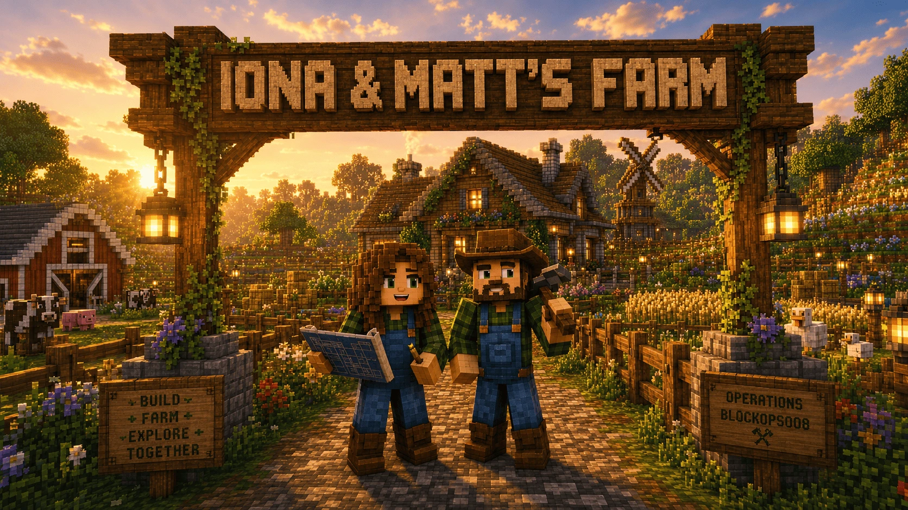
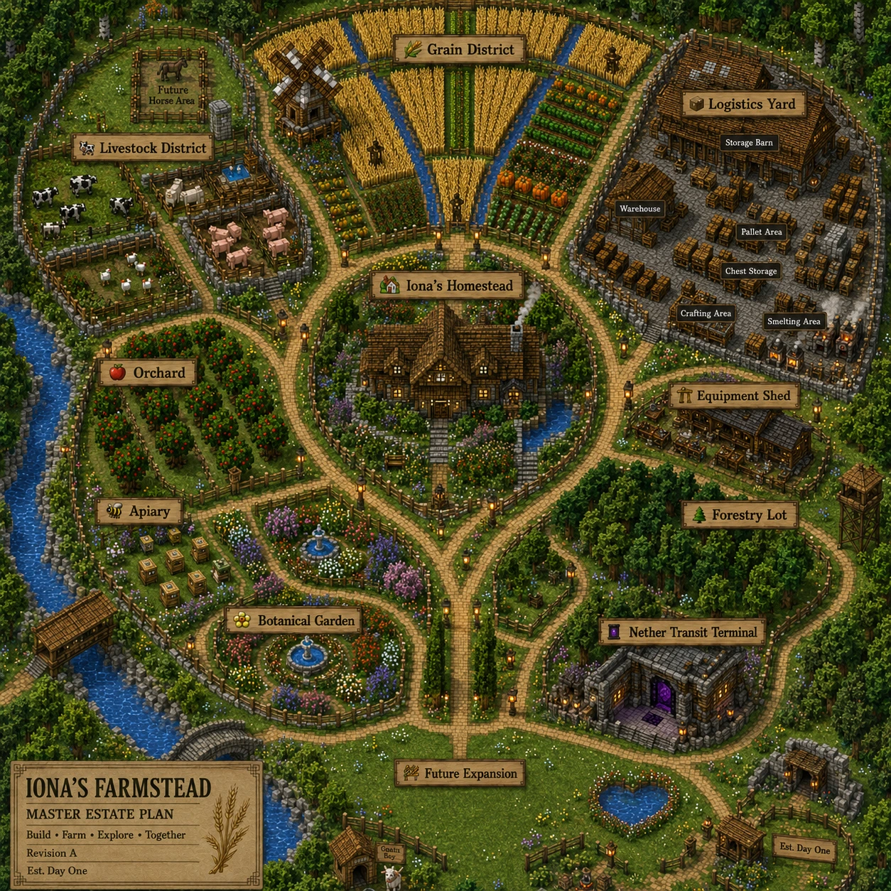

Iona & Matt's Farmstead
A fast, private Minecraft companion for planning builds, saving places, checking routes, and keeping the good trades from disappearing into memory fog.
Session Bench
Jump straight to the jobs that come up while playing: where something is, how much to gather, whether the trip is worth a Nether route, and which villager had the magic trade.
Estate Plan
Use the master plan as a world-first way into the toolbox. Each district points to the tool that helps most when you are building, farming, traveling, or organizing that part of the farmstead.
